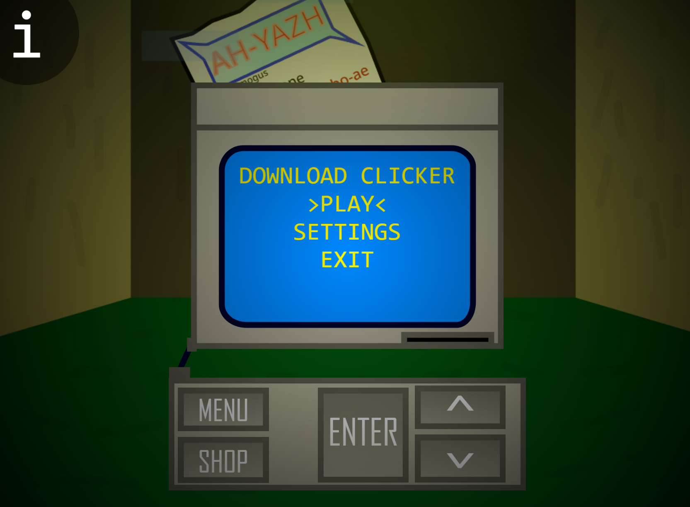
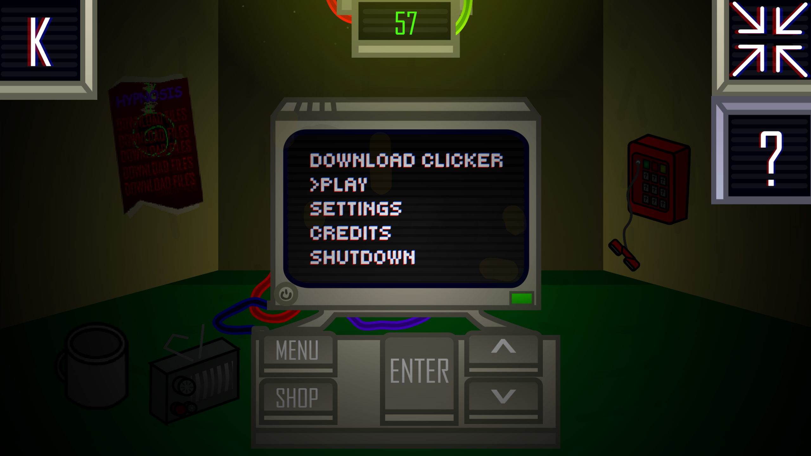
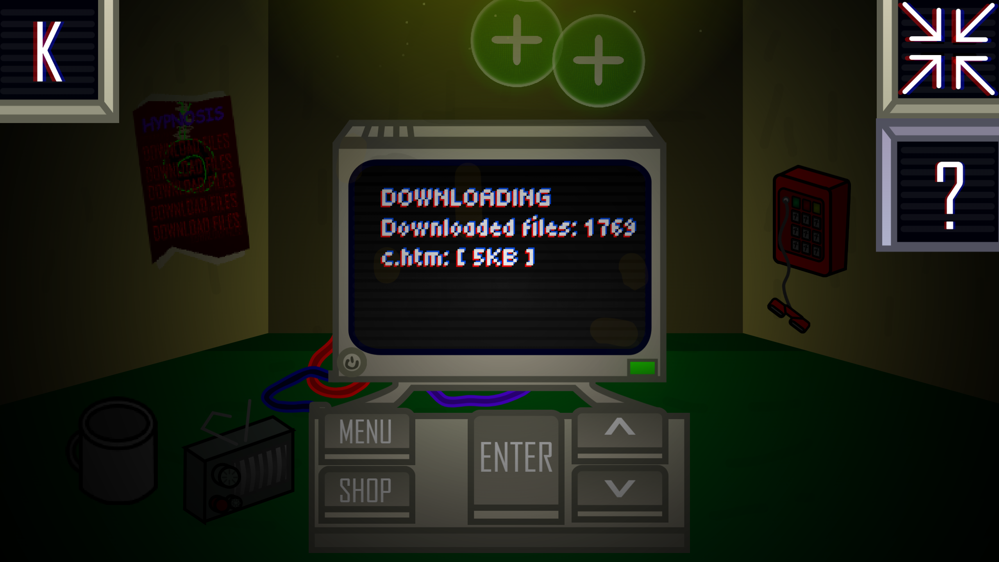
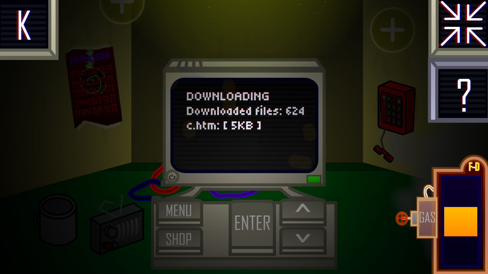
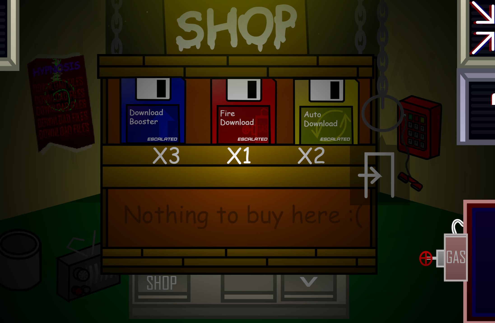
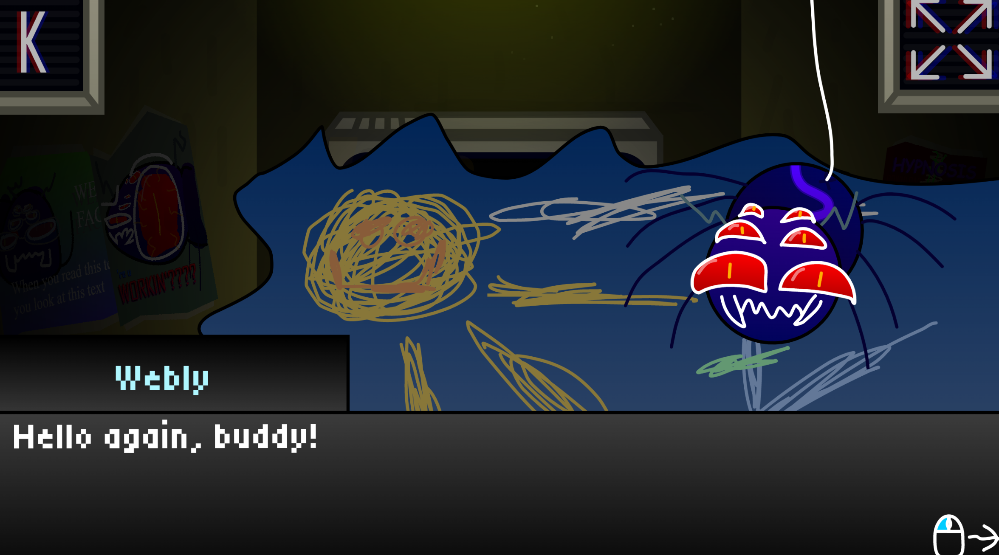

===DOWNLOAD CLICKER===
DOWNLOAD CLICKER - One of my first serious projects. I started developing it way back in 2023 as a simple clicker. Later, more and more ideas kept coming, and it grew into a whole separate game.

The game was developed on the Scratch engine, or more precisely on Turbowarp (a Scratch mod that adds tons of improvements) with extensions. And this is probably my most unusual and favorite project (in terms of code, soundtrack, and style). Of course, developing big games in Scratch with multiple scenes, even with extensions, was torture, but at the time it was pleasant torture.
Gameplay
As for gameplay, it's pretty bare-bones, let's be honest. Currently, only version "Beta 1" is publicly available... yeah... just one version... well, plus one minor update. I'm ashamed of that, yeah. This version has everything you'd find in any clicker - upgrades, a shop, and the clicker system itself, BUT this game already has its own soundtrack, plus a story with dialogues (monologues addressed to the player, to be precise).





Story
Yes, this game has a story. And I'll even say more - I'm gonna develop it further. According to the plot of DOWNLOAD CLICKER, the player gets a job as an archiver of Epstein's webpage files. It was the 90s and the internet was just starting to develop.
All you gotta do is download files from servers and upload them to the company's server for archiving (like Wayback Machine). Your boss turns out to be a dumb and cringe artificial intelligence named Webly. You're his only employee.
Yeah, pretty simple and weird plot, I agree. Keep in mind this is just a piece of the full story. Actually, DC's plot is pretty dark, I can tell you that. If you want the story to continue and to understand what's actually going on, wait for new versions of DC or new games...
Graphics
I also love the visuals of this project. It was almost entirely built using Scratch's built-in SVG image editing tool. Very handy editor by the way. In the end, the picture turned out pretty decent if you ask me. Plus, I'm amused by the fact that because of this, the graphics don't lose quality and stay smooth. There was an idea to change it, but for now I dunno. I've really grown attached to it.
Soundtrack
Also, I asked my composer friend - Taylor, what he thinks about this game and its soundtrack. He's the one who wrote all the tracks, by the way.
Creating the soundtrack for Download Clicker was my first experience writing a full soundtrack for any game. It was quite an interesting challenge, which I can say I handled 200%. If I look at these tracks now... all I can say is - these are beginner tracks. Indeed, switching to FL Studio from Ultrabox was the right decision for me as a still-learning composer. Sadly, we abandoned the game without putting in 100% of the content we had planned... maybe we had too big ambitions. Nevertheless, the soundtrack includes tracks if not for the entire game it could have been in another reality, then definitely for all the content that was prepared for the future. Will we use parts of the tracks in new works? I don't think so.
SO WHAT'S THE DEAL
And here's the deal: we finished production of this game in 2025, in the middle of developing version "Beta 2". The reason was the complexity of development. Although this torture was pleasant, it was still torture. Plus, I didn't know how to properly implement balance. So yeah, the project is now half-dead.